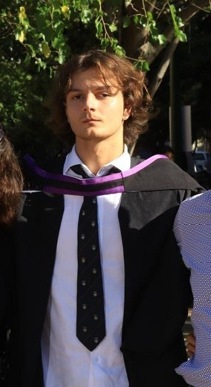
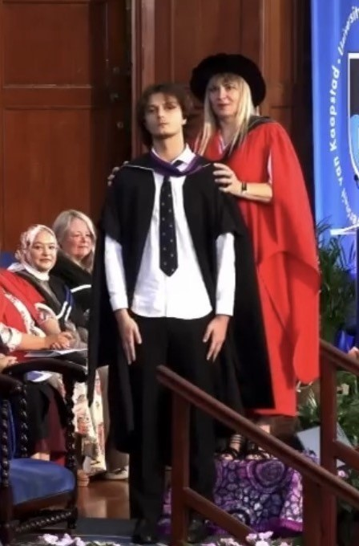
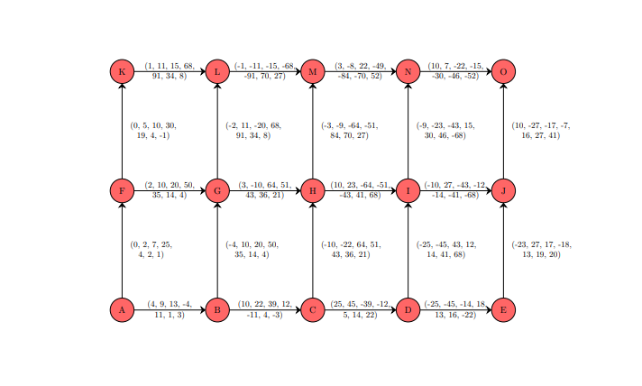
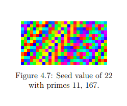

ePortfolio · Materials Science Student
BSc graduate and current Honours student at the University of Cape Town, specialising in materials engineering. Passionate about energy materials and the mathematics of crystal structures.


UCT Science Graduation 1, Autumn 2026
I am a Materials Science Honours student at the University of Cape Town, currently completing my 4th year of study. My current research interests lie in the crystal structures of energy materials and the usage of group theory to model symmetry-breaking phenomena, and the structural damage they represent.
My undergraduate degree was in mathematics, chemistry, and computer science. This year, in addition to my current coursework, I'm in the process of completing my honours thesis under the supervision of Professor Thorsten Becker , which focuses on using group theory to analyse and predict damage in energy metals.
I speak English natively, and have conversational proficiency in French and Afrikaans. Outside the lab I enjoy playing musical instruments, reading and leatherwork.
Academic credentials and formal training.
University of Cape Town · Centre of Materials Engineering, Faculty of Engineering
One-year coursework and disseration-based honours degree, specialising in material performance, characterisation, and including courses on polymer science, metallurgy, functional materials, and a thesis focusing on the use of group theory to model energy materials.
University of Cape Town · Faculty of Science
Three-year undergraduate degree majoring in Mathematics, Chemistry and Computer Science. Received scholarships for all 3 years of study, and graduated with distinctions in all three majors, and the degree with distinction, with a final GPA of 87.43%.
Westerford High School · Cape Town, South Africa
Received a 93.71% aggregate with distinctions in all 8 subjects: Mathematics, Further Studies Mathematics, Physical Sciences, Music, English Home Language, Afrikaans First Additional Language, Information Technology and Life Orientation.
Laboratory, computational, and transferable competencies.
Completed research projects and academic work.

A research project completed as part of a optional mathematics research course during my undergraduate degree, which focused on modelling the paths of hurricanes as mathematical graphs. Completed in October of 2025 under the supervision of Associate Professor David Erwin .

A research project completed as part of a optional computer science research course, available to high-achieving students, during my undergraduate degree, which focused on comparing existing random number generators in computer science with a perfect mathematical construction. Completed in October of 2024 under the supervision of Associate Professor Patrick Marais .
Formal academic contributions, ongoing and completed published works
3D printed photopolymer interpenetrating gyroid lattice structures and application in sustainable sandwich composites
J. A. Dicks, S. Schlesinger, M. Christodoulides, S. Gabriel and L. Lthuli
Currently in-progress, expected late 2026.
Experimental investigation on the response of sandwich panels with 3D printed biopolymer gyroid structure cores and asymmetric glass fibre face sheets under blast loading
J. A. Dicks, S. Gabriel, M. Christodoulides and L. Lthuli
ICILSM 2026: 5th International Conference on Impact Loading of Structures and Materials.
Currently in-progress, expected late 2026
Using Symmetry Groups to Model Damage in Crystalline Energy Metals — Working Title
M. Christodoulides, Prof. T. Becker (Supervisor)
UCT CME · Honours Research Report
Currently in-progress, expected end-of-year 2026.
Interactive summary — download the full PDF below.
Mikael Christodoulides — Curriculum Vitae
Last updated: April 2026
Open to research collaborations, academic enquiries, or a conversation about materials science. Reach out via any of the channels below.